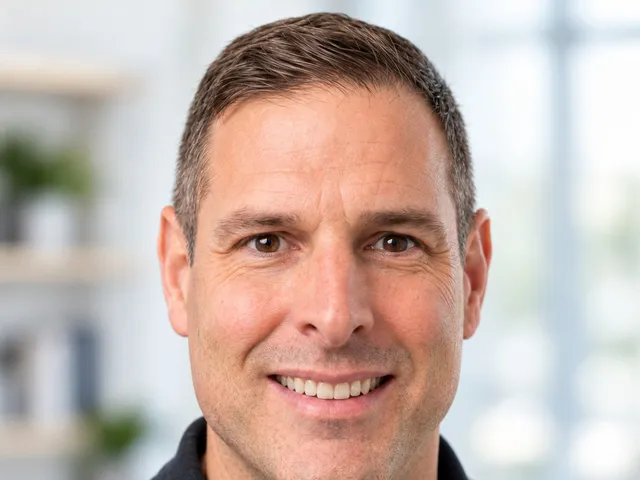

AI application builder · CPA · PMP · Building with AI in public
Ken Ashe
I build things, test new technology, and show what actually happened.
Ken Ashe is a builder, entrepreneur, CPA and PMP who documents what he builds, tests, and learns at KenAshe.ai. Much of his current work explores AI, automation, crypto, and emerging technology. He combines existing models, APIs, coding tools, and automation platforms to build agents, websites, and workflows. He is also the founder of Lucky Domains and is based in New Jersey.

How I work
I work at the AI application layer, turning existing models, APIs, coding tools, and automation platforms into working systems. Build first, test what actually happens, document the failures alongside the wins, and keep evidence separate from claims.
19 builds, 9 essays, 9 videos and 7 shorts so far, joined by 28 documented threads.
-
 My AI Blog Published 1,400 Articles. Then Google Visibility Fell 97%
My AI Blog Published 1,400 Articles. Then Google Visibility Fell 97%
-
 4 Tips for Making AI Videos That Feel Like Films
4 Tips for Making AI Videos That Feel Like Films
-
 4 AI Filmmaking Tips That Make Videos Feel Like Films
4 AI Filmmaking Tips That Make Videos Feel Like Films
-
 Returning Your Things | A Short Film by Ken Ashe
Returning Your Things | A Short Film by Ken Ashe
Explore the universeAll 19 buildsAll 9 videos and 7 shortsAll 9 essays
Background
Ashe started his career in accounting and finance, earning his CPA and working in financial reporting before moving into project, product, and program leadership. Over roughly two decades, his career included roles at S&P Global, EY, Noom, and Prudential Financial, where he ultimately served as Director of Project and Product Management.
Alongside that work, he built digital businesses, including Lucky Domains, which he still runs. He later left corporate work to focus on entrepreneurship and building practical AI applications, evaluating what they actually do and publishing the evidence here, failures included.
About 20 years working with HTML, CSS, websites and WordPress, and more recently AI-assisted development.
Army National Guard veteran. Based in New Jersey, USA.

What I bring
AI application builder
Ships agents, automations, and AI-assisted sites at the application layer, then documents what shipped and what broke.
CPA & PMP operator
Proof, controls, and delivery. Strict financial discipline and decades of scoping, sequencing, and shipping real projects.
Domains & SEO operator
Founder of Lucky Domains, a digital presence studio for the AI era.
Credentials
Licenses & designations
- Certified Public Accountant (CPA)State of New Jersey
- Chartered Global Management Accountant (CGMA)AICPA
Certifications
- Project Management Professional (PMP)Project Management Institute
- PMI Agile Certified Practitioner (PMI-ACP)Project Management Institute
Professional memberships
- Forbes Business CouncilMember (2026–Present)
Speaking & Judging
- 2026
TechRound100
Judge
Selected as a judge for TechRound100 2026, evaluating startups and emerging businesses based on product viability, market opportunity, competitive advantages, and execution.
- 2025
NFT.NYC
Speaker / Panelist
Participated in a panel discussing the future of digital identity.
- 2024
NFT.NYC
Speaker
Presented an overview of NFT domain providers and their capabilities.
Press
Profiles and interviews
- Journal of AccountancyFebruary 1, 2017Find a mentor, land a new jobA career feature profiling Ken Ashe's move from financial reporting into project management at Prudential.
- TechRoundNovember 11, 2026A Chat With Ken Ashe, Founder Of Lucky Domains And Expert Judge In The TechRound100 2026Domain names, digital identity, AI-powered search, and the future of entrepreneurship.
- NJBIZOctober 13, 2026Berkeley Heights Founder Left Noom After Lucky Domains Passed His Income TestAshe’s move from Noom to full-time entrepreneurship.
- MyCentralJerseySeptember 30, 2026Fanwood resident left a job he loved. The second act is a few minutes away.Ashe’s transition from a 25-year corporate career to full-time entrepreneurship.
- OCNJ DailySeptember 25, 2026What New Jersey Small Businesses Get Wrong About Starting With AIStart with a repetitive task, verify results, retain human judgment.
- London Loves BusinessSeptember 18, 2026What building AI applications in public can teach other buildersDocumented builds, the AI Digest, and multi-agent experiments as examples.
- Explore New JerseyJuly 8, 2026New Jersey Operator Ken Ashe Launches KenAshe.ai, a Public Build Log for Real AI ProjectsKenAshe.ai, applied AI work, background, and Lucky Domains.
Commentary
- TechRoundSeptember 30, 2026Do Domain Names Still Matter In An Age Of AI-First Internet?
- U.S. News & World Report (syndicated)February 20177 Smart Ways to Spend a $1,000 Tax Refund
- SmartsheetMarch 22, 2017How Can a PMP Study Plan Help You Pass the Exam?
- CertWiseMay 16, 20165 Project Management Fundamentals Learned the Hard Way (So You Don't Have To)
Links to every piece are in the newsroom
Available for comment on
- AI agents, workflow automation, and practical AI applications
- AI adoption for operators and small businesses
- Bitcoin, digital identity, domains, and internet ownership
- Entrepreneurship, career reinvention, and leaving corporate work
- Project, product, and program leadership
- AI in finance, accounting, and financial services
Also runs
A separate company
Lucky Domains
Lucky Domains is a digital presence studio for the AI era, offering website design and development, SEO, AI visibility, digital identity, and domain acquisition and brokerage.
Ken is the founder.
Sponsorship
Sponsor an honest test or build.
A real tool. A real task. An honest account of what happened.
I build agents, automations, and AI-assisted websites. If your product fits that work, we can agree on a practical experiment and document the results, including the limits.
- One agreed task, workflow, or build that puts the product to use.
- A hands-on test and one original article on this site, with evidence of what worked and what did not.
- One factual-review round before publication. Conclusions stay independent.
- Clear sponsorship disclosure near the beginning of the article.
Payment covers the agreed work, not a positive review. I do not guarantee views, sales, search rankings, or links that pass ranking credit. Paid links are marked as sponsored.
This is not a placement in the automated Digest.
